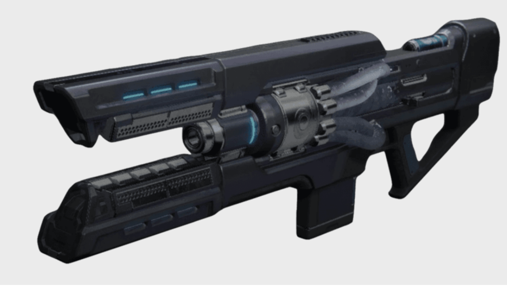

Coldheart
The latest Omolon engineering leverages liquid fuel as coolant to keep weapon systems at biting subzero temperatures.
Price: 25 000 Glimmer

The latest Omolon engineering leverages liquid fuel as coolant to keep weapon systems at biting subzero temperatures.
The Golden Age was home to the pinnacle of technology. Coldheart is one of our newest weapons to emerge from this kind of technology.
Introducing our first laser beam weapon, the Coldheart fires a beam of subzero temperatures with the help of its new liquid ammo.
The longer the laser stays on the target enemy the more powerful the weapon will become. At the maximum power level, the weapon will periodically generate Ionic Traces further heling with neutralising the target.
Compared to a standard Assault Rifle, the Coldheart will output more damage while also not being affected by recoil.